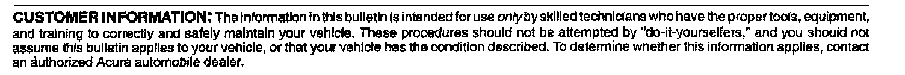

Cell Phone - HandsFreeLink(R) Troubleshooting
07-050September 25, 2007
Applies To:
2006-08 Vehicles with HandsFreeLink - ALL
Service Manual Update: HFL (HandsFreeLink) General Troubleshooting Information
INTRODUCTION
The information in this service bulletin will help you understand how to pair a phone to the HFL system, and how to make and receive calls. It includes general troubleshooting, helpful tips, and a glossary of frequently used terms. For more information on the HFL, refer to the vehicle owners manual and quick start guide.
The HFL system works only with approved Bluetooth(R)-enabled cell phones with a hands-free profile. If you are not sure if your cell phone is compatible with the HFL system, Acura has a dedicated call center at (888) 528-7876 and web site www.acura.com/handsfreelink to answer your questions.
The HFL system allows you to make and receive hands-free calls. It cannot control the phone's performance (call quality and signal strength). For more information about performance and performance problems, refer to Dropped Calls.
WARRANTY INFORMATION
None. This bulletin is for information only.
Checking Cell Phone Compatibility
The most important step in troubleshooting HFL issues is to identify the clients phone model, the software version, and the carrier that experiences the HFL problem. Not all phones with the Bluetooth feature and a hands-free profile are compatible with the HFL system.
Here is the best method to confirm if the phone is compatible:
1. Log onto www.acura.com/handsfreelink.

2. Select Find a Phone.
3. Choose the vehicle model you are working on, then select CONTINUE.
4. Choose the vehicle model year, then select CONTINUE.
5. Choose the vehicle trim level, then select CONTINUE.
6. Choose to search by wireless carrier or cell phone manufacturer, then select CONTINUE.
7. A list of all current model phones that have been tested with Acura HFL system appears. If the phone you are using is not in this list, look under the Currently Testing list and the Archived Phones list.
NOTE:
If the client's phone isn't on the web site, consider it to be incompatible.
8. Click on the phone model the client is using to view the HandsFreeLink supported features.
NOTE:
^ These approved, archived, and currently testing phone model lists are constantly changing, so make sure you view them frequently.
^ Phones are added as they are approved.
^ Phones can be removed from the approved list if a software bug is discovered that makes the phone incompatible. These phones can be added back to the approved list if the phone manufacturer corrects the bug.
^ If the software bug is corrected, a new software version is created and may be listed in the Supported Features section of the phone.
^ The Acura web site now includes the software versions that are tested and approved. When software versions are listed, you need to know which version is loaded on the phone to help you troubleshoot the client's complaint.
If you cannot access the Acura web site, call the HFL call center at (888) 528-7876 for further assistance. The call center is open Monday thru Friday from 6:00 a.m. to 6:00 p.m. CST; Saturday from 7:00 a.m. to 6:00 p.m. CST; and Sunday from 8:00 a.m. to 6:00 p.m. CST.
Voice Control Tips
To give a voice command to the HFL system, press and release the HFL TALK button. Always wait for the beep, then give your command in a clear, natural voice. The HFL microphone is on the ceiling by the map lights. If the HFL system doesn't recognize your voice command, you'll hear "Pardon." If your command isn't recognized a second time, you'll hear "Please repeat." If your command isn't recognized a third time, the HFL system sends you to its Help menu.
To hear a list of available options at any time, press the HFL TALK button and say "Hands-free help."
The HFL system may have problems recognizing some voices. To improve voice recognition:
^ Close the windows and moonroof.
^ Set the fan speed to low (1 or 2) or off.
^ Adjust the airflow from the center vents down, so that it's not blowing against the microphone on the ceiling.
^ Speak in a clear and natural voice. If the system cannot recognize your command, try speaking louder, in a deeper tone.
^ If the background noise is too loud, you may need to speak louder.
^ If you speak with something in your mouth, or your voice is too high, the system may not interpret your command correctly.
^ Find out if the problem is with one person or with everyone who uses the system. If the system has a problem with only one person's voice, this is a system limitation.
Many issues result from the client not using the system properly. Make sure the client is using the HFL buttons and not the navigation buttons. When the HFL TALK button is pressed, the client hears one audible tone. When the HFL BACK button is pressed, the client hears two audible tones. Make sure to press the HFL BACK button to exit out of the HFL main menu after completing a call and before giving any navigation commands.
The HFL system may experience a number recognition issue, such as when a customer rattles off a set of numbers in a group unrecognized by the system. The HFL system understands phone numbers in specific blocks of 1, 3, 4, 7, and 10 numbers. For example, the system understands:
1234567890
123-456-7890
1-2-3-4-5-6-7-8-9-0
The system may become confused if numbers are stated in other blocks like these:
1234-567-890
12-34-56-78-90
12345-67890
123-4567-890
Navigating Through Menus
To skip a voice prompt, press and release the HFL TALK button while the HFL system is speaking. The system begins listening for your next voice command.
To go back a step in a voice command sequence, press and release the HFL BACK button, or press the HFL TALK button and say Go back." If you don~ say anything while the HFL system is listening for your voice command, it times out and stops voice recognition. The next time you press and release the HFL TALK button, the HFL system begins listening from the point it timed out.
If you've finished or want to stop a voice command sequence at any time, press and release the HFL BACK button, or press and release the HFL TALK button, wait for the beep, and say Cancel." The next time you press and release the HFL TALK button, the HFL system begins from its main menu, and MAIN appears on the multi-information display (MID) in the instrument panel. To avoid keeping the audio system muted, press and release the HFL BACK button when you are finished.
Pairing a Cell Phone
You must pair an approved Bluetooth-compatible phone to the HFL system before you can make and receive calls. For a current list of approved phones and specific phone pairing instructions for each phone, see Checking Cell Phone Compatibility, go to www.acura.com/handsfreelink, or call (888) 528-7876.
The following procedure works for most phones. If you cannot pair your phone to the HFL system with this procedure, refer to your phone's operating manual, visit www.acura.com/handsfreelink, or call (888) 528-7876.
NOTE:
^ You cannot pair a phone while the vehicle is moving.
^ Your phone must be in its Discovery mode.
^ A maximum of six Bluetooth-compatible phones can be paired to the system.
1. With your phone on and the ignition switch in ACCESSORY (I) or ON (II), press and release the HFL TALK button. After the beep, say Phone setup." The HFL responds, Phone setup options are status, pair, edit, delete, and list."
2. Press and release the HFL TALK button. After the beep, say "Pair." The HFL responds, "The pairing process requires operation of your mobile phone. For safety, only perform this function while the vehicle is stopped. State a four-digit code for pairing. Note this code. It will be requested by the phone."
3. Press and release the HFL TALK button. After the beep, say the four-digit code you want to use. For example, say 1, 2, 3, 4. "The HFL responds, 1, 2, 3, 4. Is this correct?"
4. Press and release the TALK button. After the beep, say Yes. "The HFL responds, HFL is now searching for a Bluetooth phone. Make sure the phone you are trying to pair is in Discovery mode."
If these steps do not work on the phone you are pairing, refer to the phone's operating manual.
5. Follow the prompts on your phone to get it into its Discovery mode. The phone will search for the HFL. When it comes up, select HandsFreeLink from the list of options displayed on your phone.
6. When asked by the phone, enter the four-digit code from step 3 into your phone. The HFL responds, A new phone has been found. What would you like to name this phone?"
7. Press and release the HFL TALK button. After the beep, say the name you want to use. For example, say Toms phone. "The HFL responds, Tom's phone has been successfully paired. Returning to the main menu."
Pairing Troubleshooting
Many pairing issues are resolved by altering the clients phone settings.
Bluetooth feature settings must be turned on. Phone manufacturers set the default to disable Bluetooth features to conserve battery life. Cell phones may provide procedures to "Temporary Power On Bluetooth," or "Power On Bluetooth." Turn the Bluetooth feature on, pair the phone to the vehicle, and confirm the phone is linked. Do this by turning the phone off and back on. Make or receive a call to confirm the cell phone is successfully paired.
When the phone's Bluetooth feature is on, other hands-free accessories such as earpieces or headsets may automatically reconnect to the phone when you turn on the accessory or move it within range of the cell phone. This results in the phone not connecting to the HFL system when the client enters the vehicle. You must unlink the hands-free accessory from the phone before the HFL system can reconnect.
Some phones have an Auto Answer setting that functions with a headset. This setting must be turned off or the HFL system cannot accept any incoming calls. When this setting is on, it blocks the HFL system from answering the call, and the call goes to voice mail. This can cause the client to think that the cell phone is not paired properly.
If the HFL system has six phones paired, it will not tell you that it has reached its maximum, and will not allow you to pair a new phone. To check how many phones are paired, press and release the HFL TALK button. After the beep, say Phone setup list." The HFL system lists every assigned phone name paired with it, then finishes by saying The entire list has been read. Returning to the main menu." Count number of phones listed. If there are six, you must delete one phone before adding a new one.
Pairing Checks
1. Is the cell phone compatible with the HFL?
2. Is the Bluetooth feature turned on?
3. Is the client using the HFL buttons, not the navigation buttons, when pairing?
4. Is the cell phone battery fully charged, and is there good signal strength when pairing?
5. Do a soft reset on the cell phone.
6. If the client is trying to pair a Blackberry(R) or Palm Treo(TM) device, make sure the client uses the shift key when entering the pass code. If the shift key is not pressed, the client may be entering letters. The HFL does not recognize letters.
For more information about pairing, refer to the cell phone owners manual, or go to www.acura.com/handsfreelink.
Dropped Calls
Clients may perceive dropped calls as being an HFL system fault, but most dropped calls are resultant from cell phone and cell phone carrier issues. The HFL system does not directly handle the cell phone signal. It allows the cell phone to transmit the cell phone audio over the vehicle's audio system.
Before troubleshooting for dropped calls, confirm the cell phone settings:
^ Disable Auto Answer. If Auto Answer is enabled, incoming calls are routed to voice mail.
^ Disable Always Ask/Trust, Authorize Device, or similar setting. If these settings are enabled, each time the HFL system attempts to link to the phone, the phone will ask if you want to connect. If you do not allow the connection, the HFL will not operate. The phone must be set to Never Ask, Authorize Device, etc. (based on the phone manufacturer and carrier) for permission. Refer to the cell phone owner's manual for more information.
^ Disable Flip Open to Answer. If this setting is enabled, the phone must remain open in the vehicle. If it is closed, the incoming calls are routed to voice mail.
Always confirm with the client if the number of dropped calls is higher while using the HFL system as opposed to using the cell phone only. Clients often confuse problems with their phone or carrier as a problem with the HFL system. The HFL system cannot control or determine:
^ Cellular connection quality
^ Signal strength
^ Cellular coverage
^ Ambient weather conditions that affect cellular signals
When a client complains about dropped calls, ask questions about when or where the calls are dropped, such as:
^ Do you drive the same route on a regular basis?
^ Does the call drop in the same location?
^ Where do you keep your cell phone?
^ Have you compared the number of dropped calls using the HFL versus making calls from the handset?
^ Does your phone have an antenna that needs to be extended?
Many reasons for a dropped call are not related to the HFL system. Here are some causes for dropped calls:
^ If the quantity of dropped calls is about the same when the client uses the HFL system versus the handset, the issue is likely due to the cellular phone or carrier.
^ If the phone is equipped with a retractable antenna it needs to be extended to maximize signal strength.
^ If a client also notices that the calls tend to drop in the same areas, the HFL system may be operating normally, but something about the area diminishes cellular coverage to a point where the call drops.
^ Hills or mountains can block or interfere with cellular signals.
^ High-rise buildings, bridges, or other large structures may block or interfere with cellular signals.
^ Placing the cell phone in a purse, in a metal briefcase, under the seat, in the glove box, or in the trunk can all affect signal reception.
^ There are coverage gaps in the cellular service. When driving, a call is typically passed from one tower to another. If the client drives through an area where there is a coverage gap between towers, the call drops.
^ Electrical storms, heavy rain, or overcast conditions interfere with signal strength.
^ The cell phone battery's state of charge can affect signal reception. A low battery may reduce the phone's ability to boost the antenna's power and function properly, especially in low signal strength areas. Some phone manufacturers trade off signal transmission and reception strength for battery life. As the battery weakens, the signal strength may also weaken. Some cell phones may operate more effectively than others in low signal strength areas, especially with a partially charged battery, and depending on whether or not the retractable antenna is fully extended (if applicable). On these models, make sure the antenna is always extended to maximize signal strength and extend battery life.
Phone Will Not Automatically Connect to the HFL
If a client complains that their cell phone is not automatically connecting to the HFL system when they enter the vehicle, do this:
1. Make sure the Bluetooth feature is turned on in the cell phone.
2. Make sure the cell phone is properly paired to the HFL system.
3. Do a soft reset to the cell phone.
4. Check if the phone has an Authorized Connection or Trusted option.
5. Check the battery and signal strength on the cell phone. Pairing a phone requires optimal signal strength and a nearly full battery.
Incoming Calls
If a client complains that they cannot receive incoming calls through the HFL system, see if the call is routing to the cell phone instead of the HFL system. An easy way to know if the call is routed to the cell phone is when the client says, I can't hear the caller, but they can hear me."
1. Make sure the Bluetooth feature is turned on in the cell phone.
2. Make sure the cell phone is paired to the HFL system and linked.
3. Make sure the answer settings in the cell phone are set to multi-key or any-key answer. If the phone is set to flip-open to answer, recommend changing the setting to Any Key or leaving the phone flipped open when using the HFL system.
4. Make sure the Auto Answer feature is turned off in the cell phone.
5. Do a soft reset to the phone.
6. Make sure the battery is fully charged and there is adequate signal strength.
7. Ask the client if they have set specific ring tones or ringer IDs to specific contacts. If they have, recommend returning them to a standard ring tone for all calls.
8. Make sure the client is pressing the HFL TALK button and not the HFL BACK button or the navigation buttons.
Outgoing Calls
If a client says that they cannot place a call using the HFL system, ask if the call was initiated through the HFL system or the cell phone itself.
If the call is placed by the HFL system:
1. Make sure the Bluetooth feature is turned on in the cell phone.
2. Make sure the cell phone is paired to the HFL system and linked.
3. Make sure the client is pressing the HFL TALK button before each command and going through the calling process correctly.
4. Make sure the client is pressing the HFL TALK button and not the HFL BACK button or the navigation buttons.
5. Check if the cell phone has an Authorized Connections or Trusted option.
6. Do a soft reset to the cell phone. If the call is placed by the cell phone:
The call will remain on the handset until you transfer it over to the HFL system. To continue the call on the HFL system, you must use the Transfer command by pressing and releasing the HFL TALK button during an active call and saying Transfer." The client can now continue the call using the HFL system.
Glossary of Terms Auto Answer
This cell phone setting forces incoming calls to automatically be answered by the handset. Disable this feature on the phone when using the HFL system, as it may interfere with the HFL system answering incoming calls. Set the phone setting to Send Only, Any Key, or Multi-Key answer option.
Answer Options
These cell phone settings allow you to select how you would like to answer an incoming call on the handset. The answer option in the phone can affect inbound calls on the HFL system.
Authorized Connection
This cell phone setting allows the phone to connect automatically with the HFL system without prompting the client for permission to connect. In some instances, it can affect the ability of the phone to properly route sound to the HFL system.
Bluetooth Power
This cell phone function enables or disables the Bluetooth application. When using a hands free device such as HFL, the Bluetooth application needs to be enabled.
Discovery Mode
You need to have the cell phone in Discovery Mode to allow other devices with Bluetooth capabilities (such as the HFL system) to find the phone during the pairing process.
Downloaded Ringtones
A client gets these ringtones from an outside source, such as the internet or a mobile phone store.
HFL BACK button
Use this button on the steering wheel to end a call or return to a previous prompt in the HFL menu. Pressing the button twice or holding it down returns you to the HFL main menu.
HFL TALK button
Use this button on the steering wheel to give commands. Press the button before a voice command is given.
Hard Reset
Hard resets clear the saved settings in the cell phone and restores it to the factory defaults. A hard reset should be done only as a last resort.
Linking
This is when your paired phone is actively ready to use the HFL system. You can pair up to six phones to the HFL system, but only one phone can be linked at a time. If two paired phones are in the vehicle, only the phone that is linked can use the HFL system and functions. The second phone must be used as a normal handset.
Pairing
A description for linking two Bluetooth devices together. In this case, you are linking a cell phone with the HFL system. After the pairing process is complete, the devices are able to recognize each other and communicate wirelessly via Bluetooth.
Soft Reset
This helps to restore the basic functions of the phone. To do a soft reset, turn the phone power off, remove and reinsert the cell phone battery, then turn the phone back on.
Software Version
This refers to the software version loaded in the cell phone. The software version that was tested and determined to be compatible with the HFL system may be listed on the HFL web site. Not all software versions are compatible with the HFL system.
Standard Ringtone
These ringtones come factory-installed on the cell phone.

Disclaimer